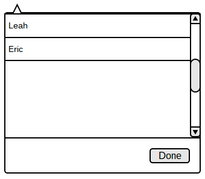

2.7.4. Private Interactions
To message a fellow classmate or classmates privately, user may click on the New Chat tab located on the left-hand side of the chatbox. It will be below the list of active or available chatrooms.
Once clicked, it will open up a new chatroom as shown in Figure 94.
Figure 94: Initial Private Chatroom
All private chatrooms come with additional options of adding users, seeing list of users in the chatroom, and leaving the chatroom.
Thus, students may add users by clicking on the avatar icon with the plus sign as shown in Figure 95.
Figure 95: Expanded Add Users
Once the drop-down dialog with a list of names appears, user can select who to add by clicking on the names.
To indicate who was selected, a check mark will appear next to the names as shwon in Figure 96.
Figure 96: Expanded Add Users with Checks
Then the user may click on the Done button to commit changes or click on the Cancel button to close dialog without saving changes.
Next, users included in the chatroom may click on the avatar icon without the plus sign to see a list of people in the chatroom.
When clicked, a dialog box will drop down listing users in the chatroom as shown in Figure 97.

Figure 97: Expanded List of Users
Then, the user may click on the Done button to close the dialog.
Lastly, the user may leave a chatroom by clicking on the X icon as shown in Figure 10.
This will remove the chatroom from the list of active or available chatrooms and remove the user from the list of people inside the chatroom as well.
Prev: question-manage
| Next: classroom-interaction
| Up: Chatbox
| Top: index